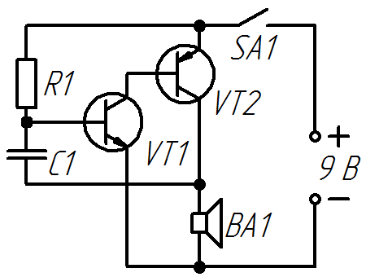

Простой звуковой генератор

Таблица 1
| Позиционное обозначение |
Наименование | Номинал | Кол-во | Замена |
|---|---|---|---|---|
| BA1 | Динамическая головка | 1...2 Вт / 8-16 Ом | 1 | |
| C1 | Конденсатор | 0,01 мкФ | 1 | |
| R1 | Резистор постоянный | 200 кОм | 1 | |
| SA1 | Выключатель | 1 | ||
| VT1 | Транзистор биполярный, n-p-n | BC847 | 1 | BC547, BC337, КТ3102, КТ315 |
| VT2 | Транзистор биполярный, p-n-p | BC857 | 1 | BC557, BC327, КТ361, КТ3107 |
После подачи питания, конденсатор С1 начинает заряжаться от источника через резистор и динамик, так как сопротивление динамика мало по сравнению с резистором, напряжение на базе транзистора VТ1 близко к нулю, что не дает транзистору открыться. При достижении напряжения в 0,7 В на конденсаторе, открывается транзистор VТ1, и, как следствие, транзистор VT2. При открытом транзисторе VТ2 напряжение на динамике близко к напряжению питания, которое в свою очередь разряжает конденсатор С1, закрывая транзисторы VТ1 и VТ2, затем процесс работы устройства повторяется.
Частоту генератора f можно определить по формуле:
 ,
,
где
С — емкость в фарадах,
R — сопротивление в омах.
При номиналах конденсатора 10 нФ и резистора 200 кОм, частота, приблизительно равна 170 Гц.